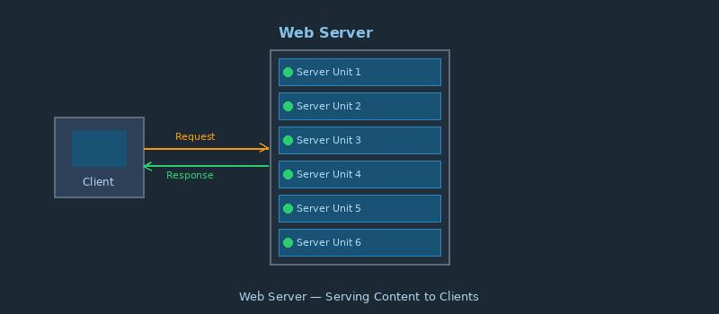

What is a Web Server?

A web server is a computer that stores websites and delivers web pages to browsers upon request. When you visit a website, your browser sends a request to that site's web server, and the server responds with the requested page.
Popular web server software includes Apache, Nginx, Microsoft IIS, and LiteSpeed.
Key facts:
- Web servers can serve static content (HTML, CSS, images) or generate dynamic content
- They use the HTTP protocol to communicate with browsers
- A single web server can host multiple websites using virtual hosting
- Web servers log every request for monitoring and debugging
Related terms: Web Browser, HTTP, Multitier Architecture